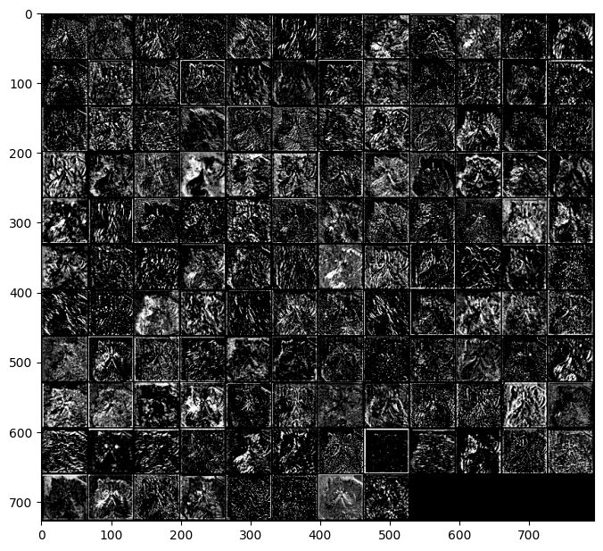
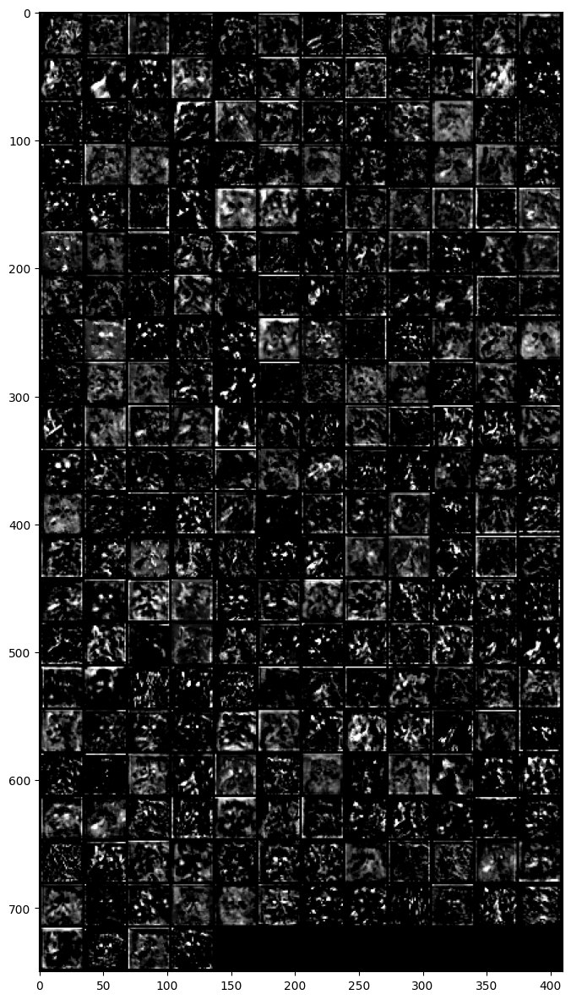
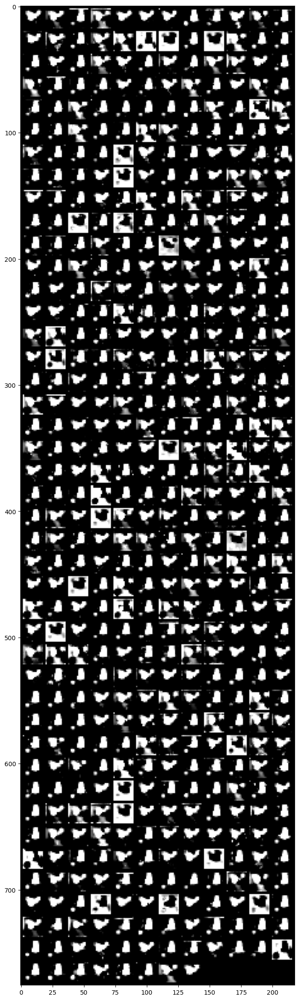

#{{<video https://youtu.be/playlist?list=PLQqh36zP38-z7s7FppJtYXFUnJzw88qWg&si=3TuaJ7IiiIG6QT7X>}}future

A1. 자잘한 용어 정리 (\(\star\))
A. \({\bf X}\), \({\bf y}\)
B. 지도학습
- 우리가 수업에서 다루는 데이터는 주로 아래와 같은 느낌이다.
데이터는 \((X,y)\)의 형태로 정리되어 있다.
\(y\)는 우리가 관심이 있는 변수이다. 즉 우리는 \(y\)를 적절하게 추정하는 것에 관심이 있다.
\(X\)는 \(y\)를 추정하기 위해 필요한 정보이다.
| \(X\) = 설명변수 = 독립변수 | \(y\) = 반응변수 = 종속변수 | 비고 | 순서 | 예시 |
|---|---|---|---|---|
| 이미지 | 카테고리 | 합성곱신경망 | 상관없음 | 개/고양이 이미지 구분 |
| 유저,아이템 | 평점 | 추천시스템 | 상관없음 | 넷플릭스 영화추천 |
| 과거~오늘까지의주가 | 내일주가 | 순환신경망 | 순서상관있음 | 주가예측 |
| 처음 \(m\)개의 단어(혹은 문장) | 이후 1개의 단어(혹은 문장) | 순환신경망 | 순서상관있음 | 챗봇, 텍스트생성 |
| 처음 \(m\)개의 단어(혹은 문장) | 카테고리 | 순환신경망 | 순서상관있음 | 영화리뷰 텍스트 감정분류 |
- 이러한 문제상황, 즉 \((X,y)\)가 주어졌을때 \(X \to y\)를 추정하는 문제를 supervised learning 이라한다.
C. 모델이란?
- 통계학에서 모델은 y와 x의 관계를 의미하며 오차항의 설계를 포함하는 개념이다. 이는 통계학이 “데이터 = 정보 + 오차”의 관점을 유지하기 때문이다. 따라서 통계학에서 모델링이란
\[y_i = net(x_i) + \epsilon_i\]
에서 (1) 적절한 함수 \(net\)를 선택하는 일 (2) 적절한 오차항 \(\epsilon_i\) 을 설계하는일 모두를 포함한다.
- 딥러닝 혹은 머신러닝에서 모델은 단순히
\[y_i \approx net(x_i)\]
를 의미하는 경우가 많다. 즉 “model=net”라고 생각해도 무방하다. 이 경우 “모델링”이란 단순히 적절한 \(net\)을 설계하는 것만을 의미할 경우가 많다.
- 그래서 생긴일
- 통계학교재 특: 분류문제와 회귀문제를 엄밀하게 구분하지 않는다. 사실 오차항만 다를뿐이지 크게보면 같은 회귀모형이라는 관점이다. 그래서 일반화선형모형(GLM)이라는 용어를 쓴다.
- 머신러닝/딥러닝교재 특: 회귀문제와 분류문제를 구분해서 설명한다. (표도 만듦) 이는 오차항에 대한 기술을 모호하게 하여 생기는 현상이다.
D. 학습이란?
- 학습이란 주어진 자료 \((X,y)\)를 잘 분석하여 \(X\)에서 \(y\)로 가는 어떠한 “규칙” 혹은 “원리”를 찾는 것이다.
- 학습이란 주어진 자료 \((X,y)\)를 잘 분석하여 \(X\)에서 \(y\)로 가는 어떠한 “맵핑”을 찾는 것이다.
- 학습이란 주어진 자료 \((X,y)\)를 잘 분석하여 \(X\)에서 \(y\)로 가는 어떠한 “함수”을 찾는 것이다. 즉 \(y\approx f(X)\)가 되도록 만드는 \(f\)를 잘 찾는 것이다. (이 경우 “함수를 추정한다”라고 표현)
- 학습이란 주어진 자료 \((X,y)\)를 잘 분석하여 \(X\)에서 \(y\)로 가는 어떠한 “모델” 혹은 “모형”을 찾는 것이다. 즉 \(y\approx model(X)\)가 되도록 만드는 \(model\)을 잘 찾는 것이다. (이 경우 “모형을 학습시킨다”라고 표현)
- 학습이란 주어진 자료 \((X,y)\)를 잘 분석하여 \(X\)에서 \(y\)로 가는 어떠한 “네트워크”을 찾는 것이다. 즉 \(y\approx net(X)\)가 되도록 만드는 \(net\)을 잘 찾는 것이다. (이 경우 “네트워크를 학습시킨다”라고 표현)
- prediction이란 학습과정에서 찾은 “규칙” 혹은 “원리”를 \(X\)에 적용하여 \(\hat{y}\)을 구하는 과정이다. 학습과정에서 찾은 규칙 혹은 원리는 \(f\),\(model\),\(net\) 으로 생각가능한데 이에 따르면 아래가 성립한다.
- \(\hat{y} = f(X)\)
- \(\hat{y} = model(X)\)
- \(\hat{y} = net(X)\)
E. \(\hat{y}\)를 부르는 다양한 이름
- \(\hat{y}\)는 \(X\)가 주어진 자료에 있는 값인지 아니면 새로운 값 인지에 따라 지칭하는 이름이 미묘하게 다르다.
\(X \in data\): \(\hat{y}=net(X)\) 는 predicted value, fitted value 라고 부른다.
\(X \notin data\): \(\hat{y}=net(X)\) 는 predicted value, predicted value with new data 라고 부른다.
F. 다양한 코드들
- 파이썬 코드..
#Python
predictor.fit(X,y) # autogluon 에서 "학습"을 의미하는 과정
model.fit(X,y) # sklearn 에서 "학습"을 의미하는 과정
trainer.train() # huggingface 에서 "학습"을 의미하는 과정
trainer.predict(dataset) # huggingface 에서 "예측"을 의미하는 과정
model.fit(x, y, batch_size=32, epochs=10) # keras에서 "학습"을 의미하는 과정
model.predict(test_img) # keras에서 "예측"을 의미하는 과정 - R 코드..
# R
ols <- lm(y~x) # 선형회귀분석에서 학습을 의미하는 함수
ols$fitted.values # 선형회귀분석에서 yhat을 출력
predict(ols, newdata=test) # 선형회귀분석에서 test에 대한 예측값을 출력하는 함수
ols$coef # 선형회귀분석에서 weight를 확인하는 방법A2. 참고자료들
- 케라스/텐서플로우: https://guebin.github.io/STBDA2022/
- 상속: https://guebin.github.io/PP2024/posts/14wk-2.html#상속
- sklearn/autogluon: https://guebin.github.io/MP2023/
- hugginface: https://guebin.github.io/MP2024/
- 리눅스관련: https://guebin.github.io/DSTBX2025/ – 자료 부실함..
- 클래스기본: https://guebin.github.io/PP2024/ – 11wk-2, 12wk-2, 13wk-2, 14wk-2
1. 강의영상
2. Imports
import torch
import torchvision
import matplotlib.pyplot as pltplt.rcParams['figure.figsize'] = (4.5, 3.0)3. OXFORD-IIIT-PET
train_dataset = torchvision.datasets.OxfordIIITPet(
root='./data',
split='trainval',
download=True,
target_types='binary-category',
transform=torchvision.transforms.Compose([
torchvision.transforms.Resize((512,512)),
torchvision.transforms.ToTensor(),
])
)
test_dataset = torchvision.datasets.OxfordIIITPet(
root='./data',
split='test',
download=True,
target_types='binary-category',
transform=torchvision.transforms.Compose([
torchvision.transforms.Resize((512,512)),
torchvision.transforms.ToTensor(),
])
)
torch.manual_seed(43052)
X,y = next(iter(torch.utils.data.DataLoader(train_dataset,batch_size=3680,shuffle=True)))
XX,yy = next(iter(torch.utils.data.DataLoader(test_dataset,batch_size=3669,shuffle=True)))
y = y.reshape(-1,1).float()
yy = yy.reshape(-1,1).float()ds_train = torch.utils.data.TensorDataset(X,y)
dl_train = torch.utils.data.DataLoader(ds_train,batch_size=64,shuffle=True)
ds_test = torch.utils.data.TensorDataset(XX,yy)
dl_test = torch.utils.data.DataLoader(ds_test,batch_size=64,shuffle=True)net = torchvision.models.resnet18(pretrained=True)
net.fc = torch.nn.Linear(512,1)
loss_fn = torch.nn.BCEWithLogitsLoss()
optimizr = torch.optim.Adam(net.parameters())
#---#
for epoc in range(3):
net.to("cuda:0")
s = 0
for Xm,ym in dl_train:
Xm = Xm.to("cuda:0")
ym = ym.to("cuda:0")
#1
netout = net(Xm)
#2
loss = loss_fn(netout,ym)
#3
loss.backward()
#4
optimizr.step()
optimizr.zero_grad()
s = s + ((net(Xm) > 0.5) == ym).sum().item()
#---#
acc = s/len(X)
print(f"train_accuracy = {acc:.4f}")train_accuracy = 0.9826
train_accuracy = 0.9932
train_accuracy = 0.9976# net.to("cpu")
# net(XX)
# 이러면 될것같은데.. 많이 느릴거에요.. (컴터뻗을수도?)s = 0
for Xm,ym in dl_test:
Xm = Xm.to("cuda:0")
ym = ym.to("cuda:0")
s = s + ((net(Xm) > 0.5) == ym).sum().item()
acc = s/len(X)acc0.95896739130434784. Feature Visualization
net2d = torch.nn.Sequential(
torch.nn.Sequential(
net.conv1,
net.bn1,
net.maxpool,
),
net.layer1,
net.layer2,
net.layer3,
net.layer4
)out = net2d[:1](X[[2]].to("cuda:0")).cpu().detach()
fig = plt.figure(figsize=(8, 8))
img_grid = torchvision.utils.make_grid(torch.einsum('ochw -> cohw', out), nrow=8)
plt.imshow(img_grid.permute(1, 2, 0))
plt.show()Clipping input data to the valid range for imshow with RGB data ([0..1] for floats or [0..255] for integers). Got range [-2.0349538..6.156901].
out = net2d[:2](X[[2]].to("cuda:0")).cpu().detach()
fig = plt.figure(figsize=(8, 8))
img_grid = torchvision.utils.make_grid(torch.einsum('ochw -> cohw', out), nrow=8)
plt.imshow(img_grid.permute(1, 2, 0))
plt.show()Clipping input data to the valid range for imshow with RGB data ([0..1] for floats or [0..255] for integers). Got range [0.0..7.703248].
out = net2d[:3](X[[2]].to("cuda:0")).cpu().detach()
fig = plt.figure(figsize=(8, 8))
img_grid = torchvision.utils.make_grid(torch.einsum('ochw -> cohw', out), nrow=12)
plt.imshow(img_grid.permute(1, 2, 0))
plt.show()Clipping input data to the valid range for imshow with RGB data ([0..1] for floats or [0..255] for integers). Got range [0.0..7.682226].
out = net2d[:4](X[[2]].to("cuda:0")).cpu().detach()
fig = plt.figure(figsize=(8, 16))
img_grid = torchvision.utils.make_grid(torch.einsum('ochw -> cohw', out), nrow=12)
plt.imshow(img_grid.permute(1, 2, 0))
plt.show()Clipping input data to the valid range for imshow with RGB data ([0..1] for floats or [0..255] for integers). Got range [0.0..7.171454].
out = net2d[:5](X[[2]].to("cuda:0")).cpu().detach()
fig = plt.figure(figsize=(8, 32))
img_grid = torchvision.utils.make_grid(torch.einsum('ochw -> cohw', out), nrow=12)
plt.imshow(img_grid.permute(1, 2, 0))
plt.show()Clipping input data to the valid range for imshow with RGB data ([0..1] for floats or [0..255] for integers). Got range [0.0..16.748167].